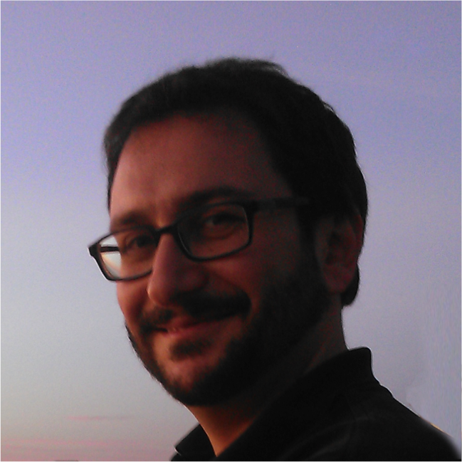

Dr Stefano Forli |
|

Stefano Forli is Assistant Professor at The Scripps Research Institute (TSRI) in La Jolla, California. He got is PhD in Medicinal Chemistry in 2006 at the Universita' degli Studi di Siena. In 2008 he moved to the Department of Molecular Biology at the Skaggs Institute (TSRI) as a post-doc in the laboratory of Prof. Arthur J. Olson, and from 2015 he is Assistant Professor of Integrative Structural and Computational Biology. He is specialized in the application of computational tools for drug design, combining medicinal chemistry and computational modelling. He was actively involved in the development of the AutoDock docking software suite, contributing to improve free energy estimation accuracy of the force field. He successfully designed and applied docking protocols to the identification of inhibitors of therapeutically relevant targets like tubulin, cSrc/Abl kinase, COX-1/2, HCV, and HIV-1. He is now the Principal Investigator for the project of the next generation of the AutoDock suite. He held virtual screening workshops for researchers in both academy and industry in United States, Europe and Asia.
|